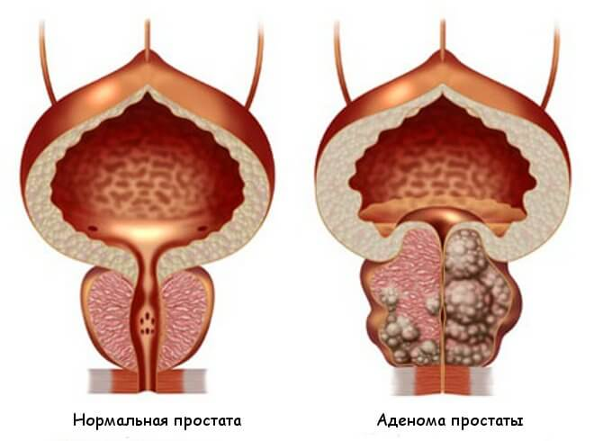

În SUA și Europa, toți bărbații tratează prostatita în 2-3 săptămâni, o dată în viață, o dată pentru totdeauna.
(metoda se descrie mai jos)
Între timp, în România: medicii lacomi în coluzie cu farmaciile ascund medicamente eficiente și „scurg de bani” bărbații anual
Prostatita este cea mai frecventă boală în rândul bărbaților cu vârsta peste 40 de ani, în timp ce medicii remarcă o tendință neplăcută de „întinerire” a bolii.Tot mai des la medici apelează bărbații cu „probleme” în vârstă de 30, 25 de ani și chiar 20 de ani.
Medicii explică popularitatea bolii astfel. Orice om:
- ducând un stil de viață sedentar,
- viața sexuală neregulată,
- obiceiuri proaste,
- boli infecțioase
- predispoziție ereditară
- suferind stres, boli sau hipotermie
aproape garantat să aiba probleme cu prostata. Cu cât sunt mai multe premise - cu atât mai rapid. Cineva la 25 de ani, cineva la 45 de ani, este o chestiune de timp.
Simptomele prostatitei - verificați-vă:
În 2017, Departamentul de Urologie a publicat statistici înspăimântătoare: mai mult de 55% dintre bărbații cu vârsta peste 40 de ani au probleme de prostată. Pentru a determina prezența prostatitei este destul de simplu și fără cunostintă medicală, majoritatea simptomelor sunt specifice:
-
Tăieturi si dureri atenuate
- în interiorul abdomenului, în scrot
- în perineu sau penis
-
Disfuncția urinării
- urinare rapidă, arsură în uretră
- senzația că „nu se golește complet vezica”
- dificultate la urinare (flux slab)
-
Disfuncție sexuală
- scăderea antrenării sexuale
- Inrautațirea calității și micșorarea duratei erecției
-
Disfuncțiea ejaculării:
- ejaculare precoce sau probleme cu realizarea sa
- ejaculare slabă
- Oboseala și iritabilitatea organismului
Chiar în ciuda declinului evident al calității vieții, mulți bărbați trăiesc cu prostatită de ani buni, neștiind de consecințele ireversibile care ar putea duce la disconforturi aparent mai mult sau mai puțin compatibile cu viața.

Prostitita netratată duce întotdeauna la adenomul de prostată („moartea bărbatului”)
De fapt pe ei se poate de înțeles, diagnosticul prostatei la orice bărbat care înțelege acest proces provoacă ostilitate și jenă serioasă. Mai mult decât atât, în marea majoritate a cazurilor, după ce s- a pus un diagnostic de prostatită, călătoriile la urolog devin o muncă silnică anuală . Medicii ameliorează simptomele cele mai acute cu ajutorul medicamentelor „recomandate de farmaciști”, dar cu fiecare hipotermie sau nerespectarea regimului, prostatita „apare din nou”.
Cum este tratată prostatita în țara noastră (și cum NU ESTE NECESARĂ să fie tratată)
Dacă locuiești în România, nu poți scăpa de prostatită, chiar dacă vrei.
Procedura standard pentru tratamentul prostatitei în România.
- Bărbatul merge la clinică. Cu plătă sau gratuit - nu contează, pentru că până la urmă va trebui să plătească oricum.
- Medicul efectuează o examinare, numește o grămadă de teste. Unele nici măcar nu sunt necesare, dar, în caz, brusc, o persoană are altceva care poate fi vindecat. În plus, analizele în sine costă bani.
- După examinare, medicul diagnostică „prostatită” și prescrie „medicamente recomandate”. De obicei se prescriu medicamente pentru ameliorarea simptomelor acute ale bolii, dar nu și pentru tratamentul prostatitei cronice. Și, desigur, urologul recomandă medicamentele companiilor ai căror reprezentanți medicali i-au adus cei mai mulți bani. Aceste medicamente sunt la urechile tuturor.
-
Pe lângă medicamentele „recomandate” pentru ameliorarea simptomelor, medicii prescriu întotdeauna un masaj de prostată rectală sau un tratament pe bază de hardware, cu un efect similar. Aceasta este o procedură umilitoare și foarte neplăcută - masajul se face cu un deget prin anusul bărbatului. În medie, masajul presupune 10-14 sesiuni. Pentru fiecare sesiune, desigur, trebuie să plătiți. În Europa, acest masaj nu se face de mai bine de 20 de ani, deoarece medicamentele moderne pot vindeca prostatita fără ea!

- Pe lângă tratamentul principal, medicii prescriu adesea medicamente pentru îmbunătățirea funcțiilor sexuale, îmbunătățirea calității spermei, „restabilirea organismului” după antibiotice etc.
Drept urmare, un tratament unic al prostatitei în România va costa un om de la 10.000 până la 30.000 de lei, urologii formează într-adevăr un curs de terapie bazat pe capacit ățile financiare ale pacientului în primul rând. În acest caz, numai simptomele acute ale bolii vor fi înlăturate. Prostita cronică va rămâne și se va manifesta din nou imediat ce bărbatul va reci sau nu va mai respecta dieta prescrisă de medic. Drept urmare, sumele indicate trebuie plătite anual - aceasta este baza pentru afacerea uro-farmaceutică comună din România.
Cum se tratează prostatita în SUA și Europa (cum corect se tratează)
În țările occidentale, pentru a vindeca prostatita, nici nu trebuie să vă adresați la un medic. Cu primele simptome, este suficient să mergi la farmacie și să cumperi un remediu dovedit timp de zeci de ani - un complex biogen poliactiv, 98% din eficacitatea căruia s-a dovedit încă din anii 80. Desigur, după numeroase verificări asupra siguranței metodei - complexul a devenit standardul de aur în domeniul tratamentului prostatitei „o dată și pentru totdeauna” în Statele Unite și în țările europene. În mod firesc, un astfel de medicament nu este benefic pentru mafia farmaciei moldovnesti - este mult mai profitabil să „plantezi” o persoană pentru înlăturarea anuală a durerilor simptomatice decât pentru a vindeca boala cu un medicament care este complet ieftin și accesibil pentru toată lumea.

Spre deosebire de țara noastră, în SUA și Europa este foarte dezvoltată asigurarea . Companiile de asigurări nu sunt interesate ca fiecare al doilea om să vizitezt medicii de 2 ori pe an - până la urmă, companiile de asigurări trebuie să plătească toate acestea, iar salariile medicilor sunt destul de mari acolo. Dimpotrivă, sunt cointeresați ca tratamentul sa fie cât mai eficient și mai rapid. O dată și pentru totdeauna.
În țările occidentale, interesele companiilor de asigurări au învins mafia farmaciei și, din fericire pentru bărbații obișnuiți, preparatele pentru tratarea prostatitei sunt întotdeauna in vânzare...
Se va schimba oare situația din România spre bine?
Din păcate, nu ne putem aștepta la schimbări pozitive în domeniul de activitate al farmaciilor și medicilor - activitatea farmacologică este multimilionară, iar cei cu pozilții mai înalte oficiale primesc venituri din aceasta.
Cu toate acestea, astăzi nu este deloc necesar să cumpărați medicamente în farmacii. Puteți face acest lucru pe Internet pe site-uri speciale. Recent, unul dintre cele mai eficiente medicamente occidentale – a apărut în România. Aproape imediat după apariție, a câștigat dragostea oamenilor.
Comparați cum diferă de cele mai populare medicamente pentru prostatită oferite de farmaciile din România
|
|
Alte medicamente |
|
|---|---|---|
| Formă de eliberare: | 20 capsule per blister | Supozitoare rectale: 10 buc. în cutie |
| Acțiune: | Tratează complet prostatita, inclusiv cronică. O dată și pentru totdeauna. În doar 1 curs de admitere. | Ameliorează doar simptomele acute ale prostatitei - dureri și deficultati cu urinarea. |
| Acțiuni suplimentare: | º Îmbunătățește libidoul º Previne ejacularea precoce º Îmbunătățește potentia º Normalizează lucrul vezicii urinare º Îmbunătățește sănătatea vasculară |
ºÎnmuierea fecalelor, intărire peristalticului intestinal |
| Efecte secundare, consecințe pentru organism | Sunt absenți. Compoziție naturală. | º Cu utilizarea frecventă, poate provoca modificări maligne la nivelul prostatei. º Reduce potenția º Provoacă probleme intestinale º Suprima imunitatea, favorizează dezvoltarea de alergii º Provoacă dureri severe de stomac |
| Principiul de lucru: | Afectează în profunzime prostata cu o compoziție special selectată de componente naturale, oferă efect antiinflamator și de întărire. Îndepărtează toată flora patogenă din prostată, îmbunătățește structura și funcția prostatei. Recomandat pentru prostatita cronică, congestivă și bacteriană. | Alină temporar durerile la prostată, mascând cursul bolii. Cu toate acestea, după încheierea acțiunii medicamentului, boala se agravează din nou. |
| Ingrediente: | Componente naturale de plante și vitamine | Samprost, monohidrat de stearat de calciu, crospovidona, citrat de trietil, dioxid de titan și alte substanțe chimice |
| Garanții: | Garanție de 365 de zile de la producător | nici o garanție |
Puteți cumpăra de pe site-ul oficial
Deja a fost lansată împotriva acestui medicament o campanie , inițiată de cele mai mari farmacii din țară, . Poate foarte curând va dispărea și el din vânzare.Deacea recomandăm ca toți bărbații să-și cumpere , pina ce este inca posibil. Acum, medicamentul este în vânzare cu doar !
Klaus Seehofer, Șeful Institutului Federal German de Medicamente Biomedicale Paul Ehrlich, profesor al catedrei de urologie.
Metoda de tratament neinvaziv a prostatitei cu un complex pe bază de ienupăr și scoarță de stejar a fost descoperită pentru prima dată de urologul german Klaus Seehofer în cadrul cercetărilor realizate de Institutul Federal German de Medicamente Biomedicale numit după Paul Ehrlich.
Klaus Seehofer a demonstrat clinic pentru prima dată eficacitatea 98% a metodei sale și a început să folosească în practica sa un preparat pe bază de ienupăr și scoarță de stejar în tratamentul prostatitei acute și cronice.
Din 1996, un preparat bazat pe coaja de ienupăr și stejar a devenit standardul medical și este recomandat pentru practica medicală în Germania și, mai târziu, în toate țările UE și SUA.
Singura omologă rusă a cărei eficiență și siguranță este recunoscută de comunitatea științifică europeană este vândută în România sub brand "".
Comentarii
Lucian
Mulțumim pentru articolul interesant! În România, totul este corupt la cel mai înalt nivel, este bine că Internetul este încă disponibil. Comandat . Voi fi tratat.
Eugen
Confirm pe deplin! a este un medicament minune. L-am cumpărat în Muntenegru când am plecat în vacanță vara trecută. Înainte de asta, am fost sigur de prostatită cronică timp de 10 ani. Am încercat să tratez, dar după cum s-a descris mai sus, tratamentul a dat doar un efect temporar. Odată cu utilizarea urotrinei, prostatita a mers complet. În mai mult de șase luni, nu m-am făcut cunoscut niciodată. Anterior, puteam visa doar la așa ceva. Recomand tuturor bărbaților. El va ajuta!
Ion
Comandat . Prețul este într-adevăr doar ))) plăcut surprins. Multumesc!
Mircea
Există, de asemenea, experiență în tratamentul prostatitei cu acest medicament. L-am cumpărat pe site-ul specificat, abia atunci nu existau acțiuni și costă mult mai mult. Dar nu este păcat, principalul lucru este că a ajutat să scape de prostatită în aproximativ 2 săptămâni, fără niciun masaj.
Teodor
Am comandat
Radu
Am urmărit cumva programul de pe primul canal despre afacerea farmacologică din România. Ceva ca o anchetă jurnalistică. Au vorbit și despre acest medicament. Asta în timp ce el este, dar în curând s-ar putea să nu mai fie. Este necesar să apucați în timp ce există.
Marcel
Am prostatită cronică de la 28 de ani. Acum am 41 de ani. În acest timp l-am tratat de două ori, când au existat exacerbări severe. Ultima dată când medicii abia au salvat. Au spus un pic mai mult și prostatita ar fi trecut în cancerul de prostată. Prin urmare, sfătuiesc tuturor celor care au prostatită să scape de ea cât mai curând posibil. Aceasta este o durere foarte periculoasă.
Doina
Este necesar ca soțul să comande astfel. Multumesc!
Constantin
L-am cumpărat. Și, totuși, s-a dovedit doar . Nu au existat niciodată astfel de acțiuni. Mulțumim producătorilor!
Vladlen
a este cel mai bun remediu dintre toate! Sunt de acord cu autorul articolului și cu toți comentatorii care l-au lăudat. L-am folosit acum aproximativ 3 luni. Prostatita a trecut complet! Înainte de asta, au fost câțiva ani, din cauza lui, penisul era sărac și am terminat rapid. Acum totul este normal
Ruba
+500. Mare remediu
Vasile
Am citit mai multe despre pe site! impresionant Am comandat-o. Mi-au promis că în 5 zile îl voi putea primi pe mail. Convenabil.
Cristi
Băieți, este ceva cu ceva! Nu am avut un singur simptom al prostatitei. Durerea a dispărut, de multe ori a încetat să alerge la toaletă, durerea a dispărut la urinare. Plus o potență semnificativ îmbunătățită și o durată crescută a sexului. Mă simt grozav. Pentru , merită cu siguranță să cumpărați. Și aș da câteva mii pentru asta. Eficiența instrumentului a fost plăcut surprinsă.
Georg
Multumesc!